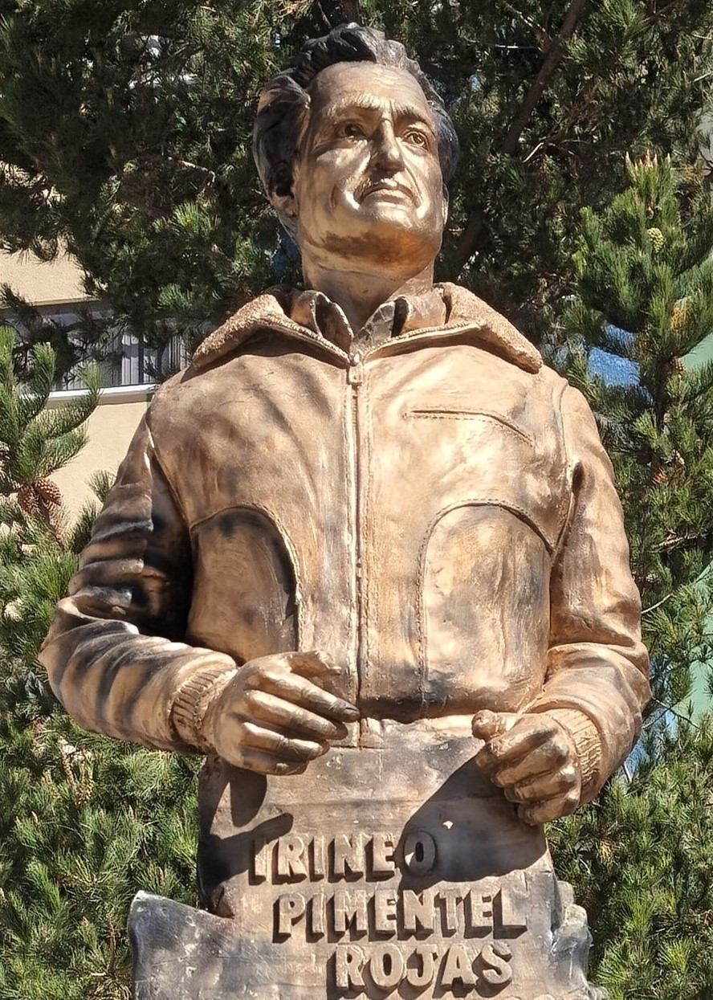

Potosí - Llallagua - Siglo XX
Monumento a Irineo Pimentel

📸 Imagen 1 (Monumento 3D): Elaboración propia / Registro 3D local. Fuente biográfica: Oporto Ordóñez, Luis. "Trayectoria sindical y política de Irineo Pimentel Rojas". Historias de Bolivia.
🎙️ Relato histórico y música ambiental:
🎵 Relato automatizado basado en la investigación de Luis Oporto Ordóñez (La Época / Historias de Bolivia).